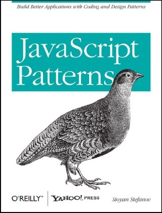

Information
Här hittar du övergripande information om kursen.
Presentation
RIA-utveckling med JavaScript är en praktisk kurs, men har samtidigt fokus på bla!
Kursen är indelad i ett antal steg.
Bygga en app, best practices.
Självständigt, men med mycket handledning, bla bla
Projekt
Först och främst så innebär kursen att du ska programmera en liten RIA (rich internet application), och samtidigt lära dig best practices blah blah
Blog
skriva skriva blog blah
Handledning
löpande skype wee!
Fördjupning
weee fördjupning!
Blah
Samarbeta
Kursplan
Den officiella kursplanen hittar du här.
Veckoplanering
Nedan ser du en en översikt över tidsperspektiven för kursens steg.
| Kurssteg | Datum |
|---|---|
| Steg 0 - Intro | Vecka 4 (23-29 jan) |
| Steg 1 - Planering | Vecka 5-6 (30 jan - 12 feb) |
| Steg 2 - Implementering | Vecka 7-9 (13 feb- 4 mars) |
| Steg 3 - Kollaborering | Vecka 10-11 (5-18 mars) |
| Steg 4 - Fördjupning | Vecka 12 (19-25 mars) |
| Steg 5 - Utvärdering | Vecka 13 (26 mars - 1 april) |
Forum
Yammer bla bla yada.
Litteratur
Böcker
Kursen har ingen officiell kurslitteratur, men dessa två böcker kommer starkt rekommenderade:
- JavaScript Patterns: I denna bok tar Stoyan Stefanov upp programmeringsmönster i JavaScript, både i smått och i stort. Den har ett ganska abstrakt upplägg, men innehåller också praktiska exempel. En väldigt bra bok för att komma in i "rätt sätt att tänka" vad gäller strukturering av JavaScriptkod.
- JavaScript Web Applications: En betydligt mer praktisk bok, där Alex MacCaw diskuterar byggande av JavaScriptapplikationer ur olika perspektiv. Väl lämpad som litteratur till denna kurs, då den också har ett kapitel om Backbone.
Online-resurser
Här är ett urval av generella online-resurser som kan tjäna dig väl i kursen:
- Mozilla Developer Network har utmärkta referenser och guider. Används med fördel när du behöver kolla upp någon bortglömd syntax! Observera att allt nyttjande av W3Schools för samma syfte är direkt förbjudet, se W3Fools för mer info.
- Essential JavaScript Design Patterns - En onlinebok av Addy Osmani, som likt Stefanovs bok ämnar hjälpa läsaren att strukturera JavaScriptkod. Starkt rekommenderad läsning!
- JavaScript Garden - Denna site är inte en JavaScript-tutorial, utan siktar in sig på att förklara just de delar som skiljer sig from mer traditionella programmeringsspråk.
- Learning Advanced jQuery - En liten interaktiv onlinekurs av jQuerys skapare John Resig, som (precis som JavaScript Garden) förklarar JavaScripts mer avancerade delar. Att genomgå denna kurs och kommentera resan är något som vi bedömde är så värdefullt att vi gjort det till en obligatorisk del av kursens första steg.
- Eloquent JavaScript - En fullständig läroresurs för JavaScript. Täcker även grundläggande programmeringsparadigmer, men är man beredd att plocka russinen ur kakan så innehåller boken också goda råd på högre nivå.
Lärare
- David Waller: Undervisande lärare, handledare (skype: litendavid)
- Johan Leitet: Examinator och kursansvarig (skype: hiktstjo)
Deltagare
Efter att registreringarna är genomförda och det första kurssteget avklarat, så kommer här finnas en lista över kursdeltagarna med länk till deras respektive bloggar och repositorier.
Arkiv
Tidigare års kurswebbar hittar du här. Ha dock i åtanke att uppläggen där skiljer sig något åt från årets version.
Steg
Kursgenomförandet är uppdelat i ett antal steg. Varje steg innebär...
- en publicering av (minst) ett blogginlägg. Dokumentationen av din arbetsgång är en viktig del i betygsunderlaget, så ge inte all kärlek till kodandet utan lägg tid på skrivandet också!
- (minst) ett handledningssamtal med lärare. Då detta är en fördjupningskurs kommer ni arbeta ganska självständigt, men förhoppningsvis kan det ändå vara en resurs för er att stämma av med oss.
För en översikt över de olika stegens deadlines, se kursens planering.
Klicka på respektive flik för att se en detaljerad redogörelse över exakt vad som förväntas på de olika stegen.
0: intro
Hello World! I detta första steg ska du kratta manegen för kursen genom att...
- läsa igenom materialet här på kurswebben. Det är viktigt att du snabbt får en översikt över hur arbetsgången kommer se ut!
- installera Git, registrera dig på Github och skapa ett repositorium för kursprojektet. Se Githubsektionen för mer info.
- genomgå John Resigs Learning Advanced jQuery, och eventuellt uppdatera/komplettera med kunskaper för att förstå hela resan! En utmärkt resurs för att bättra på / borsta av kunskaperna om JavaScripts mer esoteriska delar är JavaScript Garden.
- sätta upp en blogg där du sedermera ska redogöra för dina kursrelaterade förehavanden. Att använda en befintlig blogg är givetvis helt ok, använd i så fall gärna en unik tagg (typ "RIA") för kursens inlägg.
-
skriva ett första blogginlägg. Det ska innehålla...
- en kort presentation av dig själv, främst ur frontend-perspektiv. Hur ser din relation till JavaScript ut? Hur mycket använder du det i det dagliga värvet?
- förväntningar & förhoppningar på kursen.
- reflektioner runt Resigs Learn app. Hur nära ytan låg de kunskaperna för dig?
- en länk till ditt Github-repo.
- fixa konto på Yammer.
- Lägga ett meddelande i presentationstråden på Yammer, där ni också skickar med länk till ert första blogginlägg. När du gjort det så kommer en länk till din blogg att läggas till i deltagarlistan.
- Fånga läraren för ett första Skypesamtal.
1: planering
Nu ska du, i samråd med lärare, planera inför kursens genomförande! I och med det så har du ett antal olika beslut att fatta och detaljer att hamra ned, på fyra olika områden:
- Recept - Vad för program skall du bygga?
- Ingredienser - Vilka tekniker och bibliotek vill du använda?
- Tillagning - Hur skall allt vävas ihop?
- Servering - Hur skall din applikation tillgängliggöras?
När du genomfört planeringen skall du skriva ett nytt blogginlägg där du för varje rubrik redogör för dina val & dina tankar.
Recept
Vad ska jag bygga? moo moo
Ingredienser
Välj vilka teknologier och aspekter du vill använda i ditt projekt
Du skall också redogöra för vilken programvara du tänker använda. Främst vad gäller kodeditor, men också webbläsare & webbläsar-plugins.
Om du är nyfiken på att testa något nytt så rekommenderas du att testa Cloud9, en editor som körs direkt i webbläsaren och har integrering mot Github.
Mooo
Tillagning
Det är här dina erfarenheter från OOAD-kursen kommer till nytta! För innan vi sätter igång med implementeringen av applikationen, så ska vi planera hur de ingående bitarna skall förhålla sig till varandra.
Detta planeringssteg har alltid varit en självklarhet inom Software Engineering i stort, men just vid byggandet att JavaScriptapplikationer så finns ingen stark tradition, utan här slarvar man ofta.
Så vad innefattar då att planera sitt program? Det betyder olika saker för olika människor, men här är några tankar om vad som kan ingå:
- En skiss över de olika states som applikationen kan ha, ofta kallad storyboard. Exemepelvis startskärm, lista över alla objekt, vy över ett enskilt objekt, formulär för uppdatera/skapa ett objekt, och så vidare.
- En domänmodell över de ingående objekten. Vilka objekt är det som ingår i modellen, och hur relaterar de till varandra?
- Sekvensdiagram över programflödet. Vad händer när användaren klickar på att ta bort ett objekt?
- Ett Klassdiagram över de ingående datatyperna. Just traditionella "klasser" används ofta inte i JavaScript, så här gör man istället ofta skisser över de JSON-objekt man skickar fram och tillbaka.
- En modulskiss, vilket i JavaScript ofta innebär en karta över ett Singleton-objekt. Vilka funktioner behöver jag i min applikation, och hur skall jag sortera dem?
- Eftersom vi alla ska använda Backbone, så kan du redan nu göra en inventering av de olika Backboneobjekt du behöver; views, models, collections och routers.
dsa öasök daölsd kasöd a
Oavsett hur din planering ser ut, så är det viktiga att den ger dig en god uppfattning om hur applikationen skall struktureras och hur de olika delarna kommer prata med varandra.
Servering
Bla bla. Om du använder Node så måste ha lösning för det. Annars smidigast att använda Github genom att nyttja deras project pages-funktionalitet.
2: Implementering
koda koda koda!
3: Kollaborering
Pull request! Woo!
4: Fördjupning
slk asöld kasd
5: Utvärdering
Kursen, egna insatsen, återknyt till första inlägget & relationen till JavaScript.
Aspekter
Kursen tar upp olika bla bla bla. Frivilliga och obligatoriska. I planeringssteget ska du välja vilka av dessa du vill använda i kursen.
En av dem skall dessutom senare bli fokus för din fördjupning.
Obligatoriska
Dessa koncept är obligatoriska för samtliga.
Github
Koden till applikationen du kommer bygga ska versionshanteras med hjälp av Git. Den i JavaScriptvärlden vanligaste providern av Gitrepositorier online är Github, som också är den lösning vi använder i kursen.
Tjuvkika gärna på denna sida i förra årets kurswebb, där flertalet tutorials och resurser finns länkade.
Redan i första kurssteget skall du installera Git (om du inte redan har det), registrera dig på Github, och skapa ett repositorium för din kursapp.
Därefter kommer du löpande att committa dina ändringar lokalt för att sedan pusha upp din kod till Github. Om du vill fördjupa dig lite mer i Gitanvändning så kanske du också kommer använda taggar för att markera milstolpar i projektet, och branches för att utveckla specifik funktionalitet som sedan mergas tillbaka in i huvudbranchen ("master").
I kursens fjärde steg, efter att applikationerna är färdigställda, skall ni få testa på Githubs verkliga styrka; möjlighet till kollaboration! Här är tanken att ni skall sätta er in i en kurskamrats projekt, forka dennes repositorium, göra en liten vidareutveckling/bugfix, och sedan skicka en pull request. På samma sätt kommer du själv också få ta ställning till pull requests från kurskamrater, och merga in dessa i din kod. Om du tycker ändringen håller måttet, vill säga...
Målet med Githubanvändningen i kursen är först och främst att ni skall bli någorlunda vana användare av det, då Github har blivit mer eller mindre en standard vid större JavaScriptprojekt. Men framför allt hoppas vi också på att ni ser nyttan av det - både vad gäller den smidiga versionshanteringen, den enkla molnbackupen, och kollaborationsmöjligheterna.
Om Github ger dig mersmak så rekommenderas du att göra din fördjupning om Github. Här har du en ypperlig chans att grotta ned dig ytterligare i detaljerna!
Backbone

Som grund till applikationen kommer vi använda oss av det lilla ramverket Backbone. Läs igenom det här avsnittet för att se vad Backbone är, och vad detta innebär för ditt applikationsbyggande!
Varför Backbone?
I tidigare iterationer av kursen har studenterna fritt fått välja ramverk, men i år är just Backbone obligatoriskt. Det finns flera anledningar till att vi vill att ni ska smaka på just detta ramverk:
- Backbone har snabbt uppnått en stor popularitet, och är därför något man förväntas känna till.
- Det är ett ganska litet ramverk, och därmed fullt möjligt att bemästra inom ramen för kursen. Den ominifierade, kommenterade källkoden är bara på lite drygt 1000 rader kod.
- Backbone låter dig fritt organisera din kod, vilket är viktigt för kursen - just kodorganisation är något som är extra lurigt vid byggandet av RIA i JavaScript, och därmed något vi vill fokusera på i kursen.
- Och slutligen så är Backbone riktigt bra. :) Den erbjuder just en ryggrad för webappar, genom att tillhandahålla verktyg för kommunikation, datahantering och förmåga att reagera på dataförändringar. Detta är något som alla webbappar behöver, oavsett ras, kön & religion.
Resurser
Här listas ett antal resurser för att hjälpa dig komma igång med Backbone!
- Den Officiella hemsidan är alldeles utmärkt, och ger snabbt både en bild av vad Backbone är och hur API:t används.
- Där finner du också den dokumenterade källkoden, som är rekommenderad läsning. Backbone är som sagt inte särskilt omfattande, så att ögna igenom källkoden går ganska snabbt!
- Missa inte Backbones officiella Wiki, som är full med alldeles utmärkta länkar och resurser!
- Onlineboken Backbone Fundamentals av Addy Osmani är en ypperlig utgångspunkt. Den innehåller också en hel del diskussion runt organisering av koden.
- Den för kursen rekommenderade boken JavaScript Web Applications har ett bra kapitel dedikerat till Backbone, dessutom i kontexten just av byggandet av Web Apps. Därmed utmärkt läsning för att komma igång med Backbone i kursen! Se litteratursidan för mer info.
- Duktiga screencastföretaget Peepcode har gjort en trilogi videor om Backbone som är riktigt bra. De första två hänger ihop och täcker tillsammans grunderna väldigt väl, medan den tredje är lite mer fristående och fokuserar på persistence. De kostar $12 styck.
- Recipes with Backbone är en onlinebok som tar upp mer avancerade mönster & koncept i Backbone. Prislappen på $24 är kanske lite avskräckande, men boken är riktigt bra! Märk väl dock att den förutsätter att man redan är bekant med Backbones grunder.
Insticksprogram
Som alla ramverk med självrespekt så är Backbone gjort för att enkelt kunna utökas via plugins. I fallet med Backbone så är detta extra viktigt, eftersom ramverket bara erbjuder grundläggande funktionalitet, och frestelsen för många utvecklare att bygga ut med mer specifik funktionalitet kommer därmed vara stor.
Här nedan följer en lista på några instick som skulle kunna vara intressanta för kursappen. Det finns inget tvång på att använda några plugins i kursen. Om du funderar på att göra din fördjupning om Backbone så rekommenderas du att använda åtminstone något plugin, eftersom det är ett alldeles utmärkt sätt att lära känna ramverket bättre.
- Localstorage - En plugin som enkelt låter dig spara data via HTML5 localstorage. Rekommenderas varmt för att hantera datan i appen!
- Relational - Denna plugin låter dig definiera relationer mellan dina Models.
- Model binding - smidiga kopplingar mellan modelldata och view, som fixar automagiska uppdateringar.
Dokumentation
Ett obligatoriskt moment i projektbyggandet är att skapa en dokumentation över din kod i html-form, så att den enkelt kan länkas till och hostas på Github pages.
Du är fri att skapa den här dokumentationen precis som du vill, så att 'manuellt' tillhandahålla den är helt i sin ordning. Det uppmuntras dock att du istället genererar koden via något av de verktyg som är populära i branchen. Här är några exempel på sådana:
- JSDoc Toolkit, en javabaserad genererare som skapar en rik html-struktur.
- Docco, en enklare variant med mer övergripande kommentarer. Basversionen är Node-baserad, men där finns också portningar till de flesta andra plattformar.
- YUI Doc, en del av YUI framework. Kan användas även till icke-YUI-kod.
- Natural Docs har inte JavaScript som huvudfokus, men producerar fullt tillräcklig dokumentation.
Även om dokumentationen blir fullständig först när din applikation är klar, så rekommenderas du att du redan i inledningen väljer vilken dokumentationslösning du vill använda. Då kan du löpande kommentera koden med rätt syntax, istället för att allra sist behöva gå igenom hela din kod och lägga in kommentarerna.
Frivilliga
Frivillig fördjupning yada yada etc. högre betyg?
CoffeeScript
En av de hetaste trenderna i JavaScriptvärlden senaste året har varit CoffeeScript, som är en 'förfinad dialekt' av JavaScript. Enkelt förklarat så skriver man sin kod i CoffeeScript, som sedan kompileras om till JavaScript som körs 'som vanligt' i webbsidan (eller vad det nu är man programmerar).
Den officiella hemsidan länkad ovan är väldigt bra, du hittar också en förklaring och resurssamling här.
Notera att om du använder CoffeeScript i kursen så bör du committa bådeCoffeeScript-filerna och de genererade JavaScript-filerna till repositoriet!
Node.js
Node är ett 'JavaScript runtime environment', främst använt för att skriva Serverlösningar i JavaScript. De sista två åren har Node fått ett enormt genomslag, och spridningen bara ökar. Inledningsvis funderade vi på att ha med Node som en obligatorisk del av kursen, då den är en given plattform för en JavaScript-RIA idag. I slutändan valde vi dock att endast ha Node som en frivillig fördjupning. Om du är nyfiken, eller siktar på att arbeta professionellt med JavaScript, så rekommenderas du att kolla in Node!
Här är ett axplock av de mest användbara online-resurserna:
- Node.js officiella hemsida är den naturliga utgångspunkten. Har både dokumentation och tutorials.
- Communityns Node Wiki är en väldigt bra resurssamling.
- NodeCloud är en genererad lista över de Node-resurser som är populärast just nu. Ett supersmidigt sätt att snabbt få koll på läget!
- Node Beginner är en oerhört välskriven e-bok om att koda sin första Node-app. Boken kan läsas gratis online, och epub-version finns att köpa.
Om du väljer att använda Node i kursen så kan du inte ha Github Pages som publiceringsplattform för din app, eftersom denna bara hanterar rena webbappar. I NodeCloud-listan ovan finns dock ett antal gratis Node-hosting länkade.
NoSQL
bla bla ny paradigm bla bla, bort från SQL och tables, yidder yidder.
måste ej använda woo
Två olika:
CouchDB
CouchDB är ett projekt som sorterar under Apache Software Foundation. Ett utmärkt sätt att komma igång är att kika på onlineboken här eller Couch-sidan på förra årets kurswebb.
MongoDB
och MongoDB wee moo.
Unit Testing
bla bla yada yada BDD TDD wooo!
- Vows
- Jasmine
- QUnit
- JSTestDriver